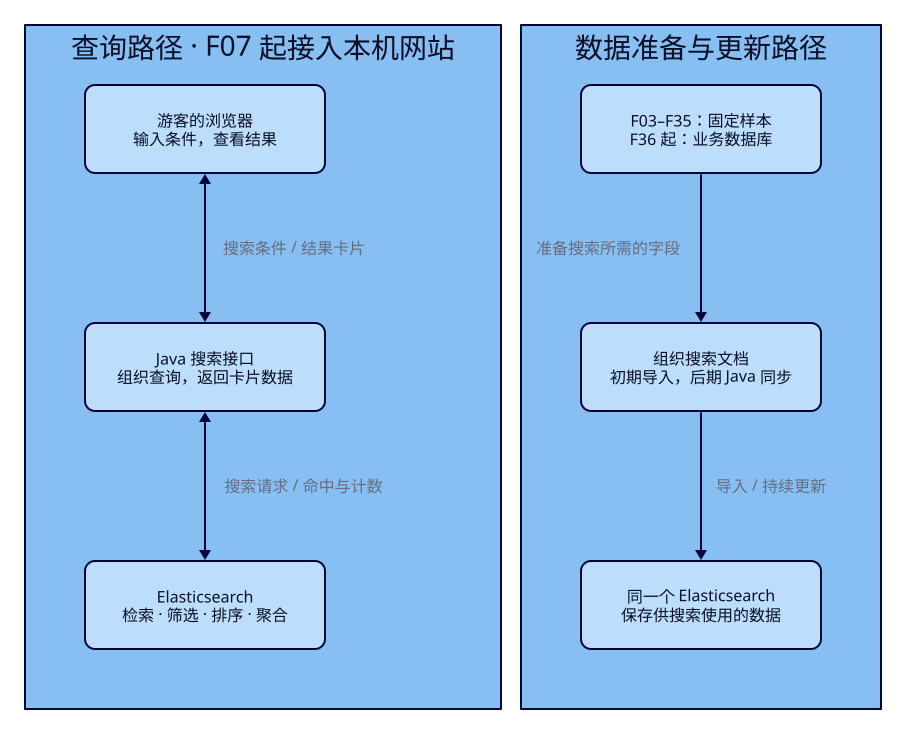
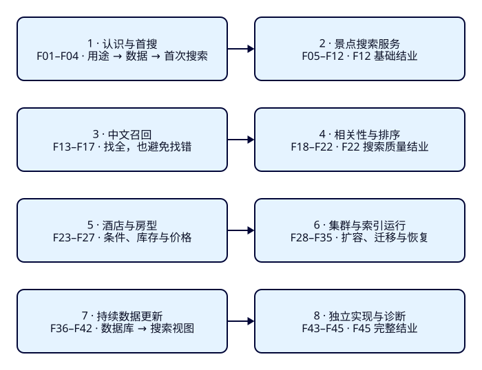

Elasticsearch 是什么，
我们怎样用旅游搜索学会它
想象你在杭州准备一天的行程：输入“西湖”，选好城市和预算，网站便列出值得去的地方。我们将沿着这一次搜索，认识 Elasticsearch（简称 ES）能做什么、怎样与数据库配合，再看完整课程怎样把这个目标一步步变成可以解释、可以验证的搜索服务。
读完这一课，你能说明什么？
- 用“西湖”这次搜索解释：找候选、筛条件、排次序和算数量分别解决什么问题。
- 画出数据库、Java 服务、ES 与浏览器的分工，并解释为什么搜索卡片里的价格需要与业务事实区分。
- 从八阶段路线找到当前问题该在哪几课学习，并判断一个简单查询是否值得引入 ES。
本课先建立认识。下一课用少量数据推演搜索，F03 才首次启动 ES。你现在只需要读懂情境、图和一份小数据样本。
展开本课目录
1. 从游客的一次“西湖”搜索开始
你已经在杭州，想找一个今天可以游玩的景点，门票预算不超过 200 元。你记得“西湖”这个名字，却不知道网站给它分配了什么编号。于是打开景点搜索，输入“西湖”，选择“杭州”“门票 ≤ 200 元”“可游玩”，使用默认的相关性排序。
这句话包含几种不同的要求。“西湖”帮助表达你想去哪里；城市、预算和可游玩状态划定可接受的范围；相关性排序决定这些结果里先看哪一个。网站不能因为某条记录很热门，就把不在杭州或超过预算的地方塞进来。
假设搜索系统里有下面五份景点信息。我们故意放入容易混淆的记录：同名异地、描述顺带提及、价格超限和已经下架。
| 教学样本 | 城市 / 门票 | 与“西湖”的关系及状态 |
|---|---|---|
| 杭州西湖 | 杭州 / 0 元 | 名称直接包含“西湖”，可游玩 |
| 湖畔茶园 | 杭州 / 80 元 | 描述写着“游览后可前往西湖”，可游玩 |
| 福州西湖 | 福州 / 0 元 | 同样包含“西湖”，可游玩 |
| 西湖夜游 | 杭州 / 260 元 | 名称包含“西湖”，可游玩 |
| 西湖旧展馆 | 杭州 / 60 元 | 名称包含“西湖”，已经下架 |
一个粗糙方案可能只检查“名称或描述有没有西湖”，随后按价格排列。它找出了相关文字，却没有忠实执行游客的全部要求。下面保持同一批数据、同一个输入，比较这个粗糙方案与我们想做出的目标方案。
| 同一输入 | 粗糙方案 · 设计示意 | 目标方案 · 设计示意 |
|---|---|---|
| 西湖 杭州 门票 ≤ 200 元 可游玩 相关性排序 | 福州西湖、杭州西湖、西湖旧展馆、湖畔茶园、西湖夜游 只找到了文字，遗漏了硬条件；按价格排，也没有回应“最相关”的需求。 | 先看到杭州西湖，再看到湖畔茶园。 福州西湖被城市条件排除；夜游被预算排除；旧展馆被状态排除。名称直接命中优先于描述顺带提及。 |
目标方案里，湖畔茶园可以成为较弱的候选，因为我们选择了同时搜索名称与描述。假如产品只允许找名称，茶园就应被排除。这提醒我们：哪些字段参与搜索、什么算相关，都是要明确设计的规则。ES 提供表达和执行这些规则的工具；它不会只凭“西湖”两个字自动知道你的产品意图。上面的次序是课程要验证的目标，尚未给出实际查询和分数。
旅行继续往下走，你还可能想知道符合条件的景点里有多少“园林”或“亲子”项目，或者找一家附近的酒店。酒店又带来更严格的问题：便宜的双床房和含早的大床房，不能拼成一间“便宜、双床、含早”的房。这些都属于搜索问题，但需要不同的数据和规则；后面的课程会逐一展开。
2. ES 是什么：把“找得到”拆成四件事
Elasticsearch 是基于 Lucene 的分布式搜索与分析引擎。你可以把景点信息交给它，以文档的形式组织数据，再按文字和条件找出结果、决定次序、计算统计。“引擎”指负责处理这些工作的服务；“分布式”表示它能让多台服务器协作承载数据和请求。我们先在一台机器上学习，F28 才开始多节点实验。Lucene 是它使用的底层检索库，源码篇再研究内部实现。官方数据存储说明。
先找出可能相关的内容：全文检索
按编号查景点时，你已经知道目标是哪条记录。输入“西湖”时，你只给了一段文字：它可能在名称里，也可能在别名或介绍中。全文检索就是根据文本找相关内容。ES 会按配置把文本处理成适合检索的项，再依据查询规则匹配。它不等同于简单判断原文是否含有一段子串；怎样处理中文、别名和词序，会影响找得到哪些景点。
被选出来的记录叫候选。该出现的景点进了候选集合，后面才有机会排到前面；如果连候选都没进来，调排序也救不回来。后面把“找出候选”这件事称为召回。F02 先用样本推演，F13–F17 再系统处理中文表达导致的漏找与找错。
判断是否允许出现：条件筛选
“必须在杭州”“门票不得超过 200 元”“必须可游玩”有明确的通过与不通过。我们将这种要求称为硬条件：福州西湖即使名称再吻合，也没有满足本次城市条件。过滤用来表达这些条件，缩小可以返回的集合。不要把“便宜一点更好”与“超过预算就不能出现”写成同一种规则。官方全文检索与过滤入门展示了这两种要求怎样组合。
决定先看谁：相关性与显式排序
杭州西湖和湖畔茶园都可能满足条件，但名称直接写着“西湖”的景点更符合这次意图。相关性描述内容与查询的匹配程度；我们会用查询规则和评分来表达这种偏好。相关性分数不是景点评价分，也不是一份自动得出的旅游推荐保证。
游客如果改选“价格从低到高”，网站就该按价格这把尺子排列；选“离我最近”，就该按距离排列。ES 支持这些排序，但应用必须明确当前使用哪种模式。名称权重、点评和热度怎样影响默认结果，要等有一批查询与对照样本后再调整，不能靠一个结果看起来顺眼就下结论。
解释整个结果集合：聚合
除了返回前几个景点，网站还想显示“园林有多少个”“门票在各个区间的有多少个”。把选定范围里的数据分组并计算数量、最小值等统计，叫聚合。它回答整个集合的问题。只数当前一页的卡片，无法代替对全部符合条件结果的统计；统计采用哪组筛选条件，也需要明确。F09 会专门修复筛选栏计数常见的范围错误。
这四件事可以组合起来：先明确要找什么文字、必须符合哪些条件，再决定展示次序和统计范围。这是理解搜索请求的第一步。ES 还用于日志检索等场景；这门课围绕旅游数据把这一条搜索路线学透。
3. 为什么考虑 ES：需求值得，才承担额外成本
假如你的页面只有几十个景点，游客按城市筛一下，点击列表进入详情，业务数据库通常就能承担这些查询。用户已经选中了景点编号，再根据编号读取名称、价格与状态，也属于很清楚的精确查找。数据库同样可以提供条件查询和全文搜索，具体能力取决于你选择的数据库与方案。
当旅游搜索不断增加名称、别名、描述匹配、中文表达、相关性、距离排序、筛选计数等要求时，ES 值得成为一个候选方案：它提供一套围绕检索与分析组织数据、表达查询的能力。是否采用，要用实际数据、查询、负载与团队能力验证。单凭“数据库数据多”或“ES 是搜索引擎”，无法推出所有查询都会更快。
引入它意味着多维护一份搜索数据。商家修改景点，搜索数据要跟上；服务需要部署、监控和恢复；字段或分词方式变化，旧数据可能需要重新组织。搜索质量也要用一批问题检查。这些工作有价值，也有成本。F28–F42 就是为了让你看清这些成本怎样发生和怎样处理。
因此，我们先问：现在查不好的到底是什么？是编号查找慢、表达方式匹配不到、结果次序不合理，还是复杂统计难维护？只有把问题说具体，才知道是否需要搜索系统，以及该评估哪种能力。对于“凭订单号查看一笔订单”“少量景点按城市列出”这样的需求，完全可以先用已有数据库解决。
4. ES 在网站哪里工作：查询与更新是两条路
游客在浏览器输入“西湖”时，网页收集关键词、城市和预算。课程规划的 Java 搜索服务负责理解这些输入，将它们组织成 ES 查询；ES 返回符合规则的景点，Java 再把需要显示的字段交给浏览器。卡片由网页展示，候选、次序和统计由这条搜索链路产生。

数据从哪里来，是另一件事。前期我们直接使用课程给出的固定景点样本，让每个人都能预测和核对结果。到了持续更新阶段，业务数据库记录景点、房型、价表等业务事实；Java 把适合一起搜索的信息整理成搜索文档，再交给 ES。比如名称、别名、城市和价格可能来自不同业务信息，搜索时却希望一次拿到。
本课程采用的分工是：数据库维护业务事实，Java 组织搜索数据与查询，ES 保存并检索搜索文档，网站展示结果。这是本案例的架构选择。ES 自身也存储数据；这里把它保存的内容当作供搜索使用的一份视图，便于与业务数据的职责区分。
假设商家把湖畔茶园的票价从 80 元改成 220 元。数据库里的修改确认后，搜索文档可能尚未更新；这里先有“数据库修改何时传到 ES”的同步延迟；即使文档写入 ES 已成功，也还要等新内容对搜索可见。后一段是 ES 内部的近实时搜索边界：ES 写入与搜索看见新内容之间可能有间隔，间隔取决于配置和运行情况，不能当成固定的时间保证。官方近实时搜索说明解释了这个边界。
因此，卡片上旧的 80 元不能证明现在仍能以这个价格购买；酒店卡片也不能证明此刻库存足够。真正涉及购买或预订时，要通过业务服务复核当前价格和库存。F12 先学写入与搜索可见的差别，F36–F42 再追踪数据库更新到搜索结果的全过程。本课程用这些情况学习搜索边界，不实现订单与扣库存。
5. 认识一份搜索数据：景点、字段、索引和命中
下面把“杭州西湖”整理成一份小 JSON。JSON 是用名称和值表达数据的格式；你可以先把它当成一张有明确栏目、容易交给程序读取的景点资料卡。这仍是设计样本，没有在本课写入 ES。
{
"attraction_id": "a-hz-xihu",
"name": "杭州西湖",
"aliases": ["西湖"],
"city_code": "HZ",
"ticket_price_fen": 0,
"currency": "CNY",
"status": "open",
"description": "杭州的湖泊景点，可沿湖游览。"
}一份这样的数据叫文档，里面的 name、city_code 等栏目叫字段。名称、别名和描述供文本搜索使用；HZ 是本课约定的杭州城市编码，供精确筛选使用；open 是教学样本中“可游玩”的状态值，不表示任何真实景区的实时营业情况。
ticket_price_fen 用整数人民币分表示门票金额，currency=CNY 表示人民币。样本中的 0 是明确的零价，不能与“价格未知”混为一谈；游客输入的 200 元预算需要换算为 20000 分再比较。金额单位在显示、查询和数据里必须对应，不能看到一个数字就自行猜它是元还是分。
许多景点文档组织在一个索引里，例如我们可以把景点搜索数据的索引设计为 travel-attractions。索引名称指这一组数据及其字段处理规则；a-hz-xihu 则标识其中的一个景点。业务字段 attraction_id 和 ES 用来定位文档的 ID 怎样保持一致，F03 会明确说明。
游客的“西湖 + 杭州 + 预算 + 状态”会被表达成一份查询，也就是向这组数据提出的搜索要求。符合查询并返回的文档叫命中。索引、文档和查询由此连起来：选择在哪组数据中搜索，对每份资料的哪些字段提出要求，最后得到哪些命中。这里的 JSON 是被搜索的数据，查询则描述要怎样找它；两者可以采用同样的格式，含义仍然不同。
你现在还不知道 ES 怎样从这些文字中迅速找到候选，也不知道“名称比描述重要”具体怎样表达。F02 会用少量样本推演数据到结果的过程，F04 再学习怎样声明字段规则。先认清我们在处理什么，比提前背下一整份配置更有用。
6. 怎样通过网站学会：看结果，也能解释结果
课程将提供一个在你本机运行的旅游搜索展示壳，包含景点搜索和酒店/房型搜索。你直接使用输入框、筛选项与结果卡片，关注它们对应的 ES 数据和查询。F07 才开始提供 Java 接口与展示壳；当前首课里的效果属于设计示意，后续实际交付与运行范围会逐课标明。
正在阅读的 Pages 是静态教程：承载正文、图解、示意、后续实验记录和代码入口。本机实验里的浏览器通过 Java 服务调用 ES。你会在本机观察真实搜索，也会在教程里对照规则与证据；只打开这篇网页不会启动业务搜索服务。
以后每次改进，我们都保留同一组数据和一个固定输入。比如这一课的“西湖 + 杭州 + 200 元预算”，基础阶段先修正城市、价格和状态，随后让名称、别名与描述合理参与匹配，再比较名称直接命中与描述提及的次序。改进前后都记录实际命中与次序，才知道新规则改变了什么；没有满足硬条件的记录，应一直被排除。
网站是观察窗口。看着卡片说“好多了”还不够，我们会沿同一次搜索看四件事：游客输入了什么；Java 发出了怎样的搜索要求；ES 返回了哪些 ID、次序、价格和数量；这些结果为何与旧版本不同。最初只看关键字段，等遇到中文、评分或房型问题，再展开相应解释。
执行课首先用 REST 观察 ES：通过 HTTP 接口直接向 ES 发出请求，便于看清每个参数的含义。其中描述搜索规则的一套表达叫 Query DSL，课程会用 JSON 逐段解释。F07 起再用 Java 写出对应实现，让同一个功能进入网站。应用基线是 Spring Boot 4、JDK 25 与官方 ES Java API Client；通用工程样板放到需要它的课，关键查询则在正文讲清。
酒店阶段会换成同一组入住日期、人数、床型与预算条件，核对价格是否来自真正合格的房型；运行阶段观察指定节点失效后数据与请求怎样恢复；更新阶段在数据库改价，追踪新值何时进入搜索。每次新增能力都有相应输入、数据和证据。即使展示界面暂时出了问题，你仍能通过对应的 REST 或 Java 结果核对搜索本身。
7. 完整路线：先做对，再做得好，再让它持续运行
45 课分成八个阶段，长度随问题而定。第一阶段先建立认识和数据；第二阶段做出基础景点搜索；接着改善中文匹配与结果质量，再处理房型、集群和持续更新；最后自己实现一个新需求，并带着实际问题进入源码篇。

大纲里的标题都是之后要回答的具体问题。当前 F01 可以阅读，F02–F45 将沿这条路线逐课推进；到课程目录查看各课进度。
阶段一 · 先知道为什么学，再完成第一次搜索（F01–F04）
你先能解释 ES 的位置，再亲手让固定景点进入搜索数据。F01/F02 不要求运行环境；F03 才安装启动，F04 把后续会用到的字段和样本准备好。
- F01 · Elasticsearch 是什么，我们为什么用它做旅游搜索？（本课）
- F02 · 一份景点数据怎样变成搜索结果？
- F03 · 让 ES 在本机运行，并查到第一条景点
- F04 · 景点信息应该怎样存，才能支持后面的搜索？
阶段二 · 做出一个可解释的景点搜索服务（F05–F12）
回到“西湖”查询：先把关键词与城市、预算等条件做对，再接入 Java 与展示壳，补上计数、排序和分页。最后用新样本独立完成一套景点搜索，并解释改价、下架后结果为何变化。
- F05 · “西湖”是在找名称，还是精确编码？
- F06 · 怎样只找杭州、预算内、附近且可游玩的景点？
- F07 · 网站输入怎样真正到达 ES？
- F08 · 名称、别名和描述怎样一起搜，结果怎样让人看懂？
- F09 · 筛选栏的数量为什么常常算错？
- F10 · 价格、距离和默认相关性，应该按哪把尺子排序？
- F11 · 翻到下一页，为什么会重复或漏掉景点？
- F12 · 改价、下架与同时修改之后，搜索结果怎样才算正确？
阶段三 · 搜不到与搜错了：处理中文召回（F13–F17）
“数据明明有，为什么没出现？”先观察文字怎样被处理，再比较分词、专有词、别名、同义词和输入提示。每次让更多正确结果出现，也要检查是否带进了不相关的结果。
- F13 · 明明有“北京故宫博物院”，为什么搜不到？
- F14 · 不同中文分词器切出来的词，真的适合旅游吗？
- F15 · 新酒店品牌和地名怎样进入搜索词典？
- F16 · “紫禁城”和“故宫”怎样找到同一景点？
- F17 · 输入一半、拼音或错字时，提示应该怎样给？
阶段四 · 找到了之后，谁应该排在前面？（F18–F22）
候选找对了，再解决杭州西湖与湖畔茶园谁更靠前。你会解释相关性分数、名称权重与业务偏好，最后用一批查询检查改善与退步，避免为了一个查询牺牲其余结果。
- F18 · ES 的相关性分数究竟在衡量什么？
- F19 · 怎样让名称真正命中，胜过描述中的顺带提及？
- F20 · 热门与好评能加分，为什么不能一味加？
- F21 · 附近、新鲜、便宜，与相关性怎样取舍？
- F22 · 调了权重，怎样证明搜索真的变好了？
阶段五 · 从景点到酒店：复杂条件与价格（F23–F27）
酒店有多个房型、多晚价格和库存。你要保证人数、床型、早餐与预算同时落在合格房型上，再说明列表价格与精确核对的范围。学习到这里，能够识别“每个条件都满足了，合起来却不存在”的错误。
- F23 · 一个酒店、多个房型，到底该建成几份文档？
- F24 · “便宜”和“含早”为什么不能分别来自两个房型？
- F25 · 连住两晚，怎样知道每晚都有房、总价是多少？
- F26 · 酒店列表的“最低价”究竟是哪一种价格？
- F27 · 酒店与房型各自怎样排序才符合用户意图？
阶段六 · 搜索服务怎样持续运行？（F28–F35）
将已经理解的搜索放到多节点环境，观察数据分布、节点失效、索引升级和快照恢复。用命中与数据证据判断服务是否恢复，再补上受限权限的 Java 连接。
- F28 · 一台机器变三台，怎样知道它们组成了同一个集群？
- F29 · 一份景点文档写到哪里，搜索又从哪里读？
- F30 · 主节点或数据节点停了，搜索系统分别会怎样？
- F31 · 加机器为什么未必解决未分配与容量问题？
- F32 · 后端怎样不再写死具体索引名？
- F33 · 字段或分词变了，怎样升级索引而不中断查询入口？
- F34 · 副本都有了，为什么还必须练习备份恢复？
- F35 · 旅游搜索接口需要哪些 ES 权限？
阶段七 · 商家改数据，搜索怎样跟上？（F36–F42）
让景点与房型从固定样本走向持续更新。先沿 PostgreSQL 的变更打通一条链路，再在独立环境用 MySQL 对照；之后处理多表组织、重复消息、乱序、删除和重建。你要能指出旧价格停在哪一层。
- F36 · 数据库的表，为什么不能简单搬成一个个索引？
- F37 · PostgreSQL 的一次增删改，怎样进入 ES？
- F38 · 换成 MySQL，哪些同步条件和恢复证据不同？
- F39 · 一个标签或房型改了，怎样更新正确的搜索文档？
- F40 · 消息重复、乱序和部分写入失败，怎样避免旧数据复活？
- F41 · 网站持续改价时，索引重建怎样追平再切换？
- F42 · 显示了旧价格，怎样知道延迟在哪、数据是否丢了？
阶段八 · 能独立实现、诊断，再进入源码（F43–F45）
扩大数据和请求，测量边界并按证据诊断。最后从空环境复现链路，自己完成一个新增搜索需求和受控故障恢复，再带着“为什么会这样”的问题走进源码。
- F43 · 数据和请求变多之后，怎样测量系统还能承受多少？
- F44 · 搜索慢了或失败了，怎样沿证据找到原因？
- F45 · 不看逐步答案，你能独立完成一个新搜索需求吗？
三个时候，停下来检验自己
F12 基础结业：给你一批新的景点数据，你能自己决定字段、写出关键词与城市/预算筛选，完成排序、分页与 Java 接口，并解释一次改价或下架后的搜索可见性。做到这里，已经能独立完成基础景点搜索，不必等到学完集群和数据同步才证明自己学会。
F22 实用搜索结业：给你没有在正文出现过的查询，你能分清漏找、误找与次序不合理，提出修改，并在一批查询中报告改善和退步。评价依据来自固定数据和结果，不能只凭一个好看的页面。
F45 完整结业：从空环境复现景点、酒店、集群和更新链路，完成一个新增需求与受控故障恢复，并说明数据、请求和结果之间的关系。三个结业点都将使用新任务，逐步答案留到事后复盘。
开始 F03 时再准备终端与运行环境；进入 F07 前补齐基础 Java 和 JSON 阅读能力；数据库与同步环境到 F36 再引入。每课先预测结果，再操作、核对和解释；环境怎么启动、实验怎么还原，由对应执行课给出完整步骤。学习路线里的能力逐步建设，不要求你在第一天同时掌握所有组件。
8. 合上正文，检查自己的理解
这一课的检查不需要终端。先用自己的话回答，再展开对照；能讲清原因，就达到了导学课的目标。
1. “西湖 + 杭州 + 门票 ≤ 200 元 + 可游玩”：哪些要求找候选，哪些要求排除结果？为什么茶园不能靠高热度突破预算？
“西湖”表达文本意图，可按设计在名称、别名或描述中找候选；城市、价格和状态是硬条件，不符合就不能进入结果。相关性、热度等排序偏好用于排列允许出现的候选，不能把 220 元的茶园重新加进 200 元预算的结果。只有用户主动改变条件，允许集合才改变。
2. 商家已经把茶园改为 220 元，网页仍显示 80 元。读图后，你会检查哪些位置？
先核对业务数据库是否确实保存了新价，再查搜索文档的组织与传递是否完成、ES 是否已接收新值，以及新值是否已对搜索可见。如果 ES 返回新价而网页仍显示旧价，还应检查 Java 返回内容与页面显示。数据库修改确认不能替代整条链路的核对；搜索卡片中的旧价也不能作为购买凭证。
3. 文档、索引、查询、命中怎样区分？刚才那份 JSON 属于哪一种？
文档是一份景点数据，字段是其中的栏目；索引组织一组文档及其字段处理规则；查询表达要找什么；命中是符合查询而返回的文档。刚才的 JSON 是文档设计样本，不是一个已经执行的查询，也不是实际搜索响应。索引名 travel-attractions 与景点业务 ID a-hz-xihu 指向不同层次。
4. 你接到五种问题：别名搜不到、描述命中排在名称前、房型条件串了、搜索旧价格、节点停机。分别回到哪个阶段？
别名搜不到先看阶段三 F13–F17，检查文字处理与表达；名称/描述次序看阶段四 F18–F22，也要核对 F08 的字段选择；房型串条件看阶段五 F23–F27；旧价格先用 F12 区分写入与搜索可见，再用阶段七 F36–F42 跟踪更新链路；节点停机看阶段六，特别是 F30 的故障与恢复。现象可以跨层，阶段帮助你找到起点，最终仍以数据和请求证据定位。
5. 一个只提供“按景点编号读详情”和“按城市列出几十条景点”的小应用，必须引入 ES 吗？怎样判断？
无需因为它叫旅游网站就引入 ES。先检查现有数据库能否满足查询、规模和维护要求；如果已经足够，可继续使用。需要更复杂的文本匹配、相关性、统计或其他搜索能力时，再用实际样本评估 ES 的收益与额外数据同步、运行成本。没有测量，不能承诺换用 ES 后一定更快。
本课陷阱
“西湖”出现在五份数据里，并不表示五份都该返回。要同时检查城市、预算、状态、次序与统计范围；文本匹配只是搜索正确性的一部分。
业务修改、搜索文档更新、搜索可见和页面显示都有各自的时点。购买或预订前需要业务服务复核。酒店条件也必须落在同一份合格房型上，不能拼接不同房型的便宜、含早与床型。
名称与描述谁更重要、“紫禁城”是否对应“故宫”、城市和预算是否必须满足，都需要数据与查询规则支持。引入搜索引擎只是有了工具，还要用样本检验它是否执行了你的规则。
速记：先能解释，再开始运行
| 问题 | 这节课的回答 |
|---|---|
| ES 做什么？ | 组织搜索文档，按文字与条件检索，排列结果并计算聚合。 |
| 各自负责什么？ | 本案例中，数据库维护事实；Java 组织文档与查询；ES 提供搜索视图；网站展示结果。 |
| 何时考虑使用？ | 先明确现有查询难以满足的搜索需求，再评估效果与同步、运行成本。 |
| 怎样学会？ | 同样本、同输入，预测并核对实际命中、次序、价格与计数，解释改动带来的得失。 |
| 路线关键点？ | F02 推演；F03 首搜；F07 Java/展示壳；F12、F22、F45 独立结业。 |
你现在能描述一次正确的搜索，却还没有解释 ES 怎样从一组景点资料中找到候选。下一课“一份景点数据怎样变成搜索结果？”先用小样本推演这个过程，再到 F03 安装运行，把理解与真实结果对上。